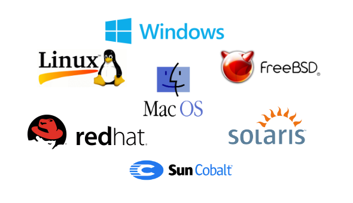

What is OS?
An operating system (OS) is system software that manages computer hardware and software resources, and provides common services for computer programs.
Time-sharing operating systems schedule tasks for efficient use of the system and may also include accounting software for cost allocation of processor time, mass storage, peripherals, and other resources.
For hardware functions such as input and output and memory allocation, the operating system acts as an intermediary between programs and the computer hardware,although the application code is usually executed directly by the hardware and frequently makes system calls to an OS function . Operating systems are found on many devices that contain a computer – from cellular phones and video game consoles to web servers and supercomputers.
Structure of a Computer System
- Users (people who are using the computer)
- Application Programs (Compilers, Databases, Games, Video player, Browsers, etc.)
- System Programs (Shells, Editors, Compilers, etc.)
- Operating System ( A special program which acts as an interface between user and hardware)
- Hardware ( CPU, Disks, Memory, etc)
What are the 3 names of OS?
The three most common operating systems for personal computers are Microsoft Windows, macOS, and Linux.
Microsoft Windows
macos
Linux